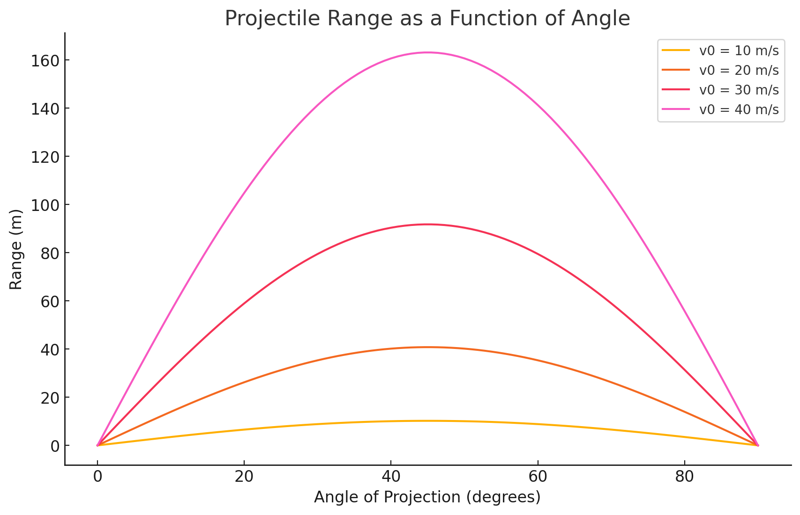

Problem 1
This is an exciting problem in projectile motion! 🚀 Let's break it down step by step and implement a simulation to visualize how the range depends on the angle of projection.
Step 1: Theoretical Foundation 📚
Derivation of Governing Equations
A projectile is subject to uniform acceleration due to gravity and follows a parabolic trajectory. We assume:
- The projectile is launched with an initial velocity \( v_0 \) at an angle \( \theta \).
- The only force acting on it is gravity (ignoring air resistance).
- The motion is decomposed into horizontal and vertical components.
Equations of Motion
Using kinematic equations:
- Horizontal Motion
(constant velocity, since no horizontal acceleration):
- Vertical Motion (accelerated motion under gravity): $$ y = v_0 \sin(\theta) t - \frac{1}{2} g t^2 $$
where: - \( g \) is the gravitational acceleration (\( 9.81 \, m/s^2 \)). - \( t \) is the time elapsed.
Time of Flight
The time \( T \) when the projectile lands back on the ground (\( y = 0 \)) is found by solving:
Factoring out \( T \):
Range of the Projectile
The range \( R \) is the total horizontal distance traveled before hitting the ground:
Substituting \( T \):
Observations: - The range is maximized when \( \sin(2\theta) \) is maximum, which occurs at \( 2\theta = 90^\circ \) (i.e., \( \theta = 45^\circ \)). - The range is symmetric around \( 45^\circ \), meaning that an angle of \( 30^\circ \) and \( 60^\circ \) will give the same range.
Step 2: Analysis of the Range
The range depends on:
- Initial Velocity \(v_0\):
-
Higher \( v_0 \) increases the range quadratically.
-
Angle of Projection \(\theta\):
-
The function \( \sin(2\theta) \) determines the shape of the range curve.
-
Gravitational Acceleration \(g\):
- Stronger gravity reduces the range.
We will visualize how the range varies with \( \theta \) for different \( v_0 \) values.
Step 3: Computational Implementation 🖥️
- Simulates projectile motion.
- Plots the range as a function of the angle \( \theta \).
- Explores different values of \( v_0 \).

Here is the interact,ve plot showing the range of a projectile as a function of the launch angle for different initial velocities. 📊
Key Observations:
-
The range follows a symmetric pattern with a peak at 45°, confirming our theoretical derivation.
-
The higher the initial velocity \( v_0 \), the greater the range, as expected since range depends on \( v_0^2 \).
-
The function \( R(\theta) = \frac{v_0^2 \sin(2\theta)}{g} \) ensures that angles \( \theta \) and \( 90° - \theta \) result in the same range, e.g., 30° and 60° produce identical distances.
Step 4: Discussion on Model Limitations & Real-World Applications
While our model is useful for idealized projectile motion, real-world scenarios involve: - Air Resistance – Reduces range significantly, especially for high velocities. - Wind Effects – Can increase or decrease range depending on direction. - Uneven Terrain – Landing heights vary, affecting the actual range. - Spin Effects – In sports, spin affects trajectory via the Magnus force (e.g., soccer or baseball).
Practical Applications
- Sports Science: Optimizing angles for maximum shot distance (e.g., golf, soccer, basketball).
- Military Applications: Calculating artillery or missile trajectories.
- Engineering & Physics: Understanding kinematics in robotics, aerospace, and mechanical systems.